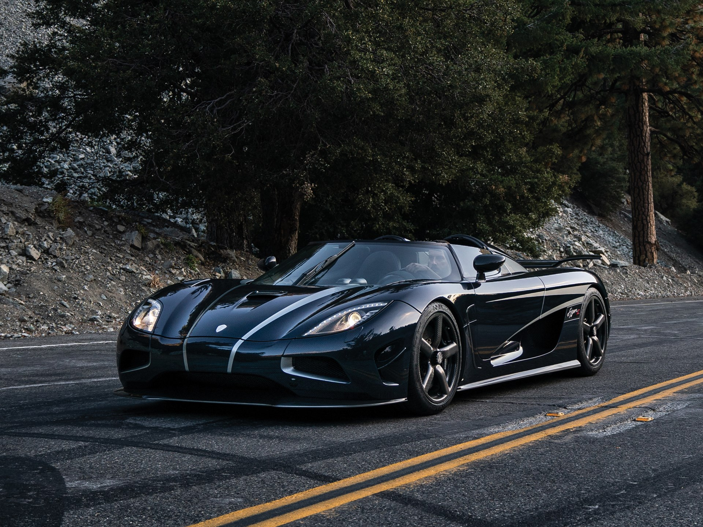

Koenigsegg Automotive AB (кратко: Koenigsegg — ˈkøːnɪɡsɛɡ) — шведская компания-производитель автомобилей спортивного класса. Основана в 1994 году Кристианом фон Кёнигсеггом. Изначально располагалась в Улофстрёме, впоследствии перебазировалась в Маргрететорп, возле Энгельхольма. Партнёром является швейцарская часовая компания EDOX.
